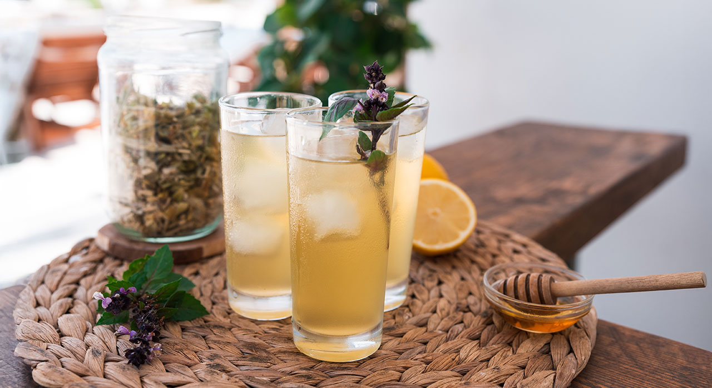
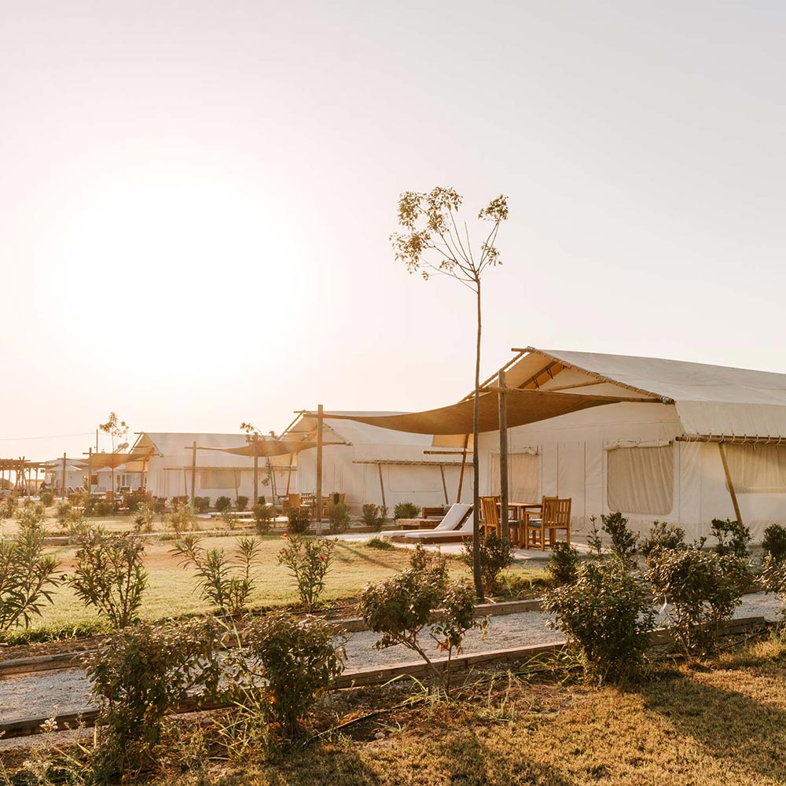
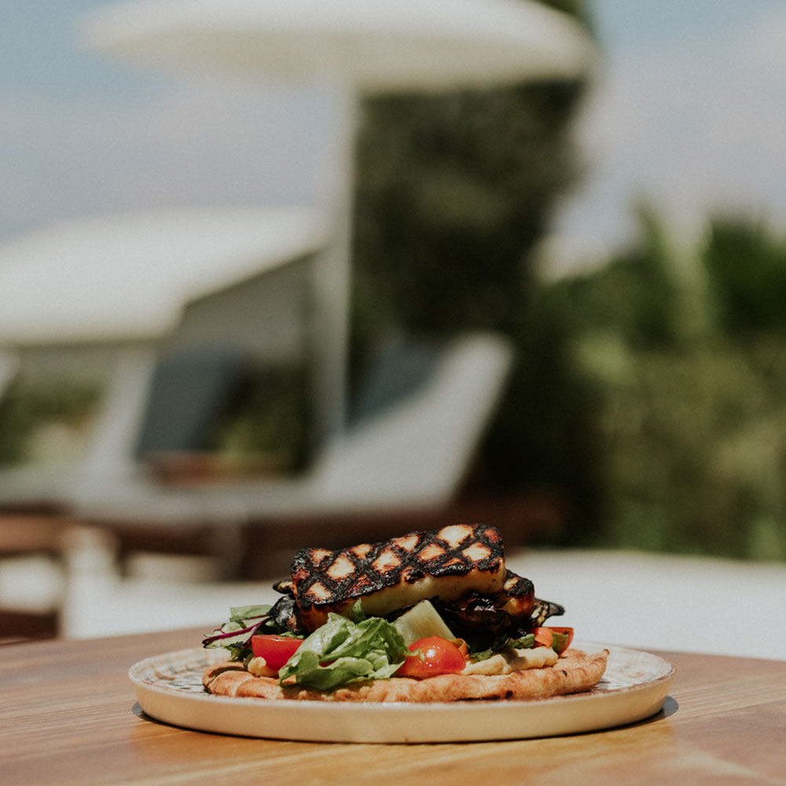
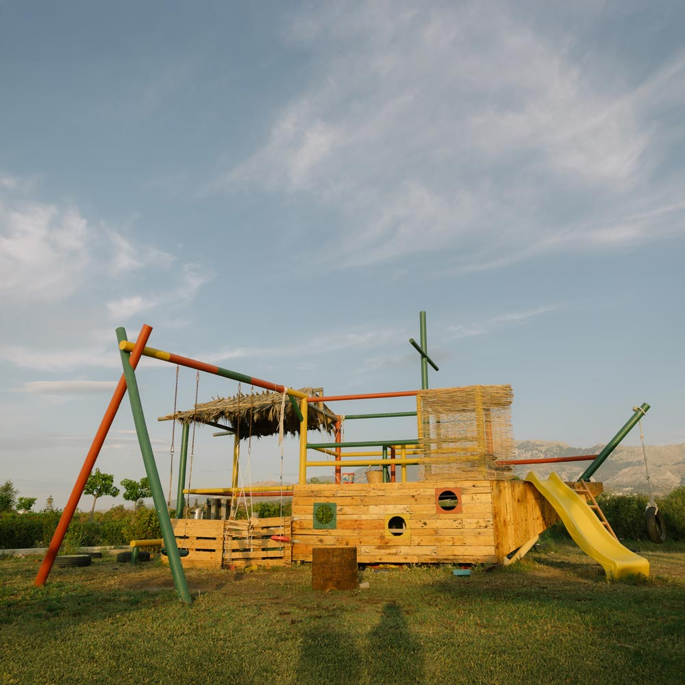
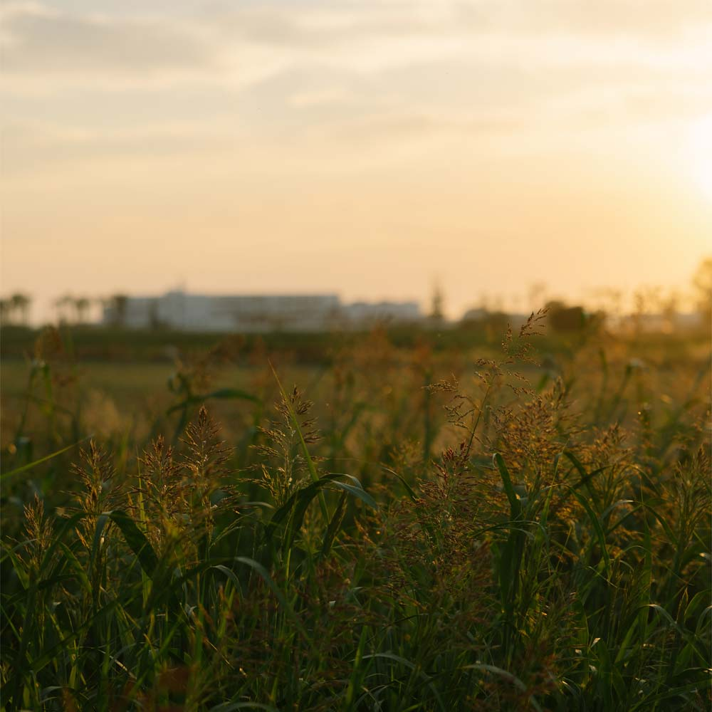

Marmari Beach
The resort's own stretch of sand and shallow, calm water, with sun loungers and a private beach area. The village of Marmari — bakery, supermarket and tavernas — is a short stroll away.
Sails on Kos sits on quiet farmland at Marmari, on the north coast of the island, a short stroll from the beach. The island is flat and easy to explore, and almost everything worth seeing is within a short drive. Here is what we would point a guest towards.
Guest guide · sample content
The resort's own stretch of sand and shallow, calm water, with sun loungers and a private beach area. The village of Marmari — bakery, supermarket and tavernas — is a short stroll away.

The island's capital: a lively harbour, an old town full of restaurants and shops, and ancient ruins standing right beside the modern streets.

One of the most important healing sanctuaries of the ancient world, laid out over terraces on a hillside above the island — a place tied to Hippocrates himself.

A plane tree said to have been planted by Hippocrates, in the shade of the Castle of the Knights and beside the ancient agora.

A 15th-century castle of the Knights of St John guarding the harbour, with the palm-lined avenue and its bridge leading up to the gate.

A whitewashed mountain village famous for its sunsets over the whole island — come for the view, and for the honey and herbs sold in the little shops.

A salt lake and wetland next to the beach where flamingos and other migrating birds stop in spring and autumn. Flat, easy cycling country all around.

A day trip to the neighbouring island: sail across to the crater of one of Greece's most active volcanoes, and the white village of Nikia on its rim.

Quiet beaches and the ruins of a Byzantine basilica on a small headland — a favourite spot for a slow afternoon.

A medieval castle out on the plain and a restored windmill, right beside the island's traditional house museum.
Kos is the third-largest of the Dodecanese islands — green and level in the middle, rising to Mount Dikeos in the south, ringed by sandy beaches and shallow water. In spring the fields are full of wild flowers; in autumn the light softens and the sea stays warm long after the summer crowds have gone.
Getting around is easy: bicycles, scooters and cars can all be arranged from the resort, and the airport and Kos Town are a short drive away.